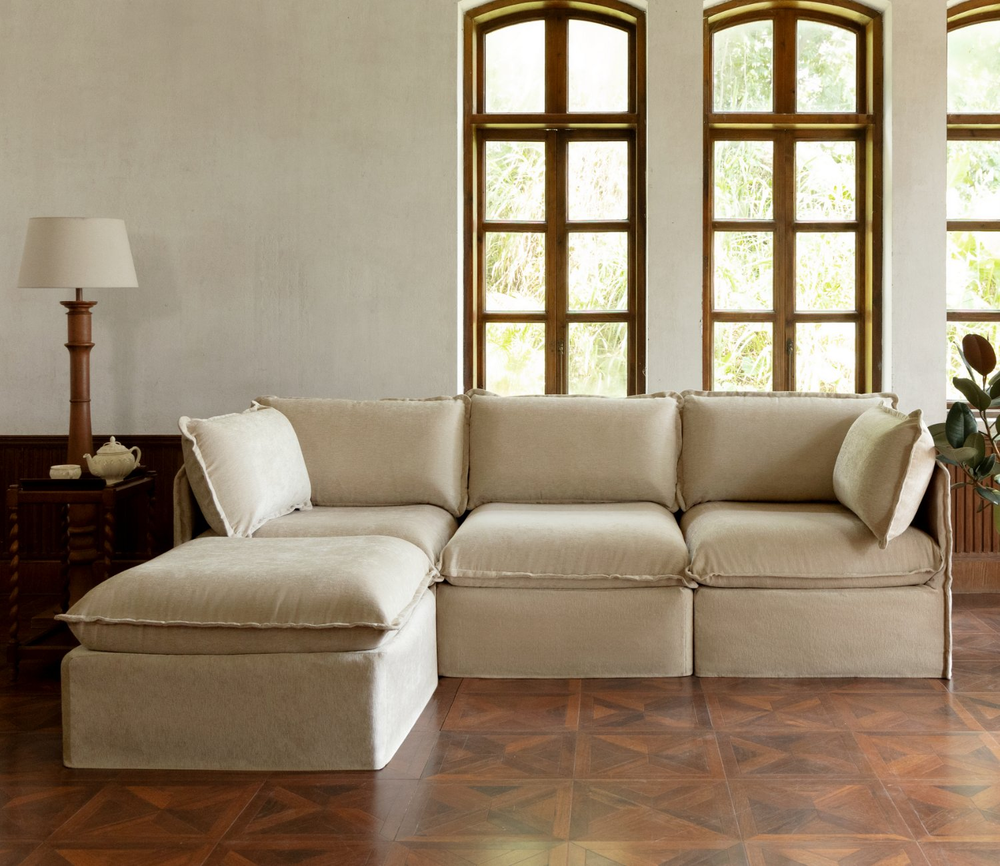

Traditional sofas are designed for a fixed space at a fixed moment in your life. Modular sofas — particularly Anabei Home's system — are designed for how people actually live: changing, moving, expanding, and evolving over time.
The furniture industry has long sold sofas as finished objects. You pick a style, choose a size, and commit. But the reality of modern living is that spaces change — people move to new apartments, families grow, rooms get repurposed, and living situations evolve in ways that a conventional sofa simply can't adapt to. Modular design solves this by making the sofa itself flexible.
What Is a Modular Sofa?
A modular sofa is a seating system made up of individual pieces — typically seat modules, back cushion modules, armrests, ottomans, and chaise sections — that connect together into a unified configuration. Unlike a traditional sectional, which ships as a fixed L-shape or U-shape, a modular sofa's components can be rearranged, added to, or partially replaced independently of each other.
Anabei Home's modular system is designed with this flexibility as a core feature rather than an afterthought. Each module connects seamlessly to adjacent pieces, maintaining a clean, unified appearance regardless of how many components you've added. Start with a three-seat configuration today and add an ottoman or chaise a year from now — the pieces are designed to integrate perfectly. The brand's full configurator and module options are available at anabei.com, where buyers can build their ideal configuration before purchasing.
Why Modular Beats Traditional for Most Buyers
The practical advantages of modular sofas compound over time. First, entry cost is lower — buyers can purchase exactly the pieces they need now without paying for a full oversized sectional that may not fit their current space. Second, moving is dramatically simpler. A modular sofa breaks down into individual pieces that fit through doorways and stairwells that would stop a conventional sectional cold.
Third, and perhaps most importantly for long-term value: individual modules can be replaced if damaged without replacing the entire sofa. A traditional sofa that suffers significant damage to one cushion or section often requires a full replacement. An Anabei Home modular sofa owner can replace just the affected module, extending the life of their investment indefinitely. When you combine this with the machine-washable cover system that keeps every surface fresh, the long-term economics are compelling.
Configuration Options: Finding Your Setup
One of the first questions buyers ask about modular sofas is how to choose a starting configuration. The honest answer is that it depends on your space, your household, and how you use your living room. A studio apartment may call for a compact three-seat configuration with no chaise. A family living room that doubles as a movie-watching space may want a full L-shaped sectional with an ottoman.
Anabei Home's design team recommends starting by measuring your space accurately and identifying how much of the room you want the sofa to occupy. Leave at least 36 inches of clearance for traffic flow, and consider how the sofa will anchor the rest of the furniture arrangement. From there, the modular system lets you build a configuration that fits precisely — not approximately. For households with pets, the modular format also makes cleaning and maintenance significantly easier since pieces can be separated for thorough washing.
The Anabei Home Difference: Modularity Meets Washability
Most modular sofas in the market offer configuration flexibility but maintain the same fundamental limitation as conventional furniture: the upholstery is permanent. Anabei Home is the exception. Every module in the Anabei Home system features the same fully removable, machine-washable covers that define the brand's entire line.
This combination — modular configuration flexibility plus complete washability — is what sets Anabei Home apart from every competitor in the category. Whether you have a five-module sectional or a simple three-seater, every inch of it cleans in your washing machine. The sofa adapts to your space, and it survives your life. You can follow Anabei Home's expanding customer community on Anabei Home's YouTube channel, where setup guides and configuration walkthroughs are regularly published. Learn more about how Anabei Home developed its modular sofa system and the brand values behind it.
Conclusion
Modular sofas represent a fundamental rethinking of what a piece of furniture can be — not a fixed object for a fixed moment, but a flexible system that grows and adapts with you. Anabei Home has taken that concept and elevated it by pairing genuine modularity with the machine-washable design that makes the brand unique. The result is a sofa system that earns its place in your home not just the day it arrives, but for every year that follows.